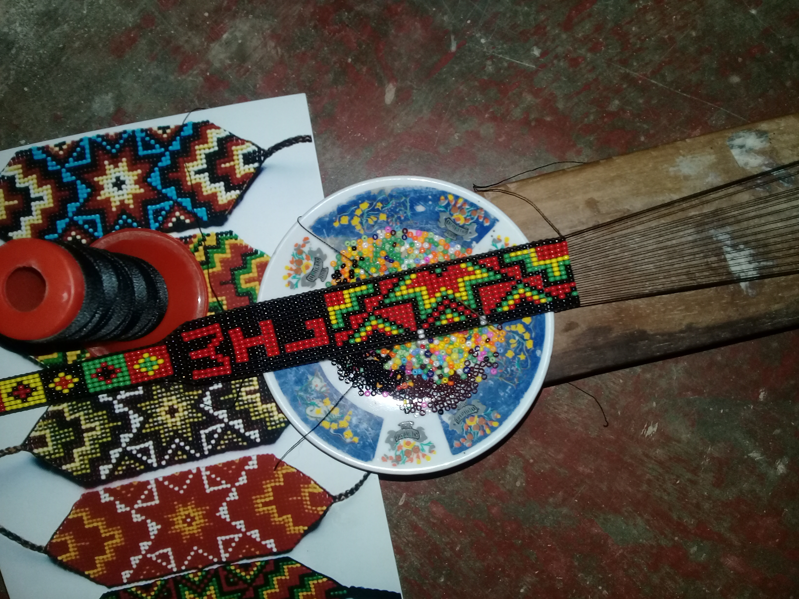

Bienvenido a nuestra pagina, en ella podrás encontrar lo que puedes hacer durante esta cuarentena, para que no te desesperes y aprocehes tu tiempo mientras estas en tu casa
Hoy en dia hay muchas herramientas que nos proporciona internet para aprovechar nuestro tiempo. Estas son algunas paginas que podrias visitar para que aprendas nuevas cosas.
Todos sabemos que el Covid 19 ha paralizado todo, es por eso que te tenemos estos tips para que en casa no te desesperes y puedas esperar toda esta cuarentena.
La Artesanía ha estado presente en todos los tiempos a continuación mostramos unos trabajos artesanos que puedes hacer

Recomendaciones para pasar el tiempo en casa
Es muy útil mantenerse activo. No hay que pasar los días en el sofá viendo la televisión, en realidad, esto puede ser contraproducente. Además, es más probable notar sintomatología ansiosa cuanto menos activo, psíquicamente y físicamente, se está. Es recomendable leer algún libro, hacer crucigramas, acertijos, comenzar a aprender un nuevo idioma o desarrollar cualquier actividad
Vestirse con ropa de calle, aunque manteniendo la comodidad. Evitar llevar siempre el pijama ayuda a diferenciar mejor los tiempos de descanso.
La vida está cambiando y con ella las rutinas. Crear una nueva rutina para hacer en casa, organizar el tiempo para disfrutar del ocio y solventar las responsabilidades de la mejor forma posible. No hay que olvidarse de sociabilizar, aunque sea desde casa. Eso hará que los pensamientos no estén focalizados en el mismo tema y que, por lo tanto, la ansiedad no aparezca. No hay que descuidar la higiene, sino todo lo contrario.